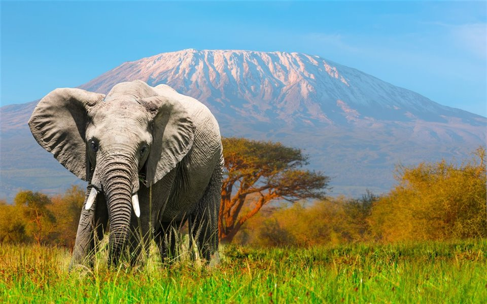

Elefante
Hipervínculos externos
A una página de interneth1
Elefantes
A una página de internet en una imagen

Mi correo con hipervinculo
Mi correo

Hipervinculos internos
Indice
Concepto
Tipos
Caracteristicas
Habitat
Aliemntacion
Concepto de los elefantes
Los elefantes o elefántidos (Elephantidae) son una familia de mamíferos placentarios del orden Proboscidea. Antiguamente se clasificaban, junto con otros mamíferos de piel gruesa, en el orden, ahora inválido, de los paquidermos (Pachydermata). Existen hoy en día tres especies y diversas subespecies. Entre los géneros extintos de esta familia destacan los mamuts.
Elefante salvaje indio del bosque de Marayoor, Munnar, Kerala.
Cría de elefante africano de sabana (Loxodonta africana), parque nacional Kruger, Sudáfrica.
Los elefantes son los animales terrestres más grandes que existen en la actualidad. El periodo de gestación es de veintidós meses, el más largo en cualquier animal terrestre. El peso al nacer usualmente es 118 kg. Normalmente viven de cincuenta a setenta años, pero registros antiguos documentan edades máximas de ochenta y dos años. El elefante más grande que se ha cazado, de los que se tiene registro, pesó alrededor de 11 000 kg (Angola, 1956), alcanzando una altura en la cruz de 3,96 m, un metro más alto que el elefante africano promedio.

Tipos de elefantes
- Elefantes africanos (Loxodonta).
- Elefantes asiáticos (Elephas).
Caracteristicas de los elefantes
Presentan una prolongación nasal muy desarrollada, denominada probóscide (comúnmente conocida como trompa) que, gracias a su desarrollada musculatura (tiene 150 000 músculos), les da una gran movilidad y sensibilidad. La trompa es la fusión de la nariz y el labio superior del elefante, y le sirve para muchas cosas, además de respirar y oler:
Es tan sensible que puede distinguir formas y texturas al tocar algo.
Emite sonidos (barritos) de diferentes tipos, incluyendo infrasónicos.
Con ella recoge comida, ya sea del suelo o de hasta 6 o 7 m de altura.
La usan para aspirar agua, que luego ponen en su boca para beber o echan en su cuerpo para refrescarse.
A lo largo de la trompa corre el canal nasal, y como tiene el mejor olfato del mundo, la levantan en el aire a fin de percibir olores lejanos.
Los elefantes también poseen colmillos, que en realidad son incisivos; salen de su mandíbula superior y crecen curvos a los lados de la trompa. Les sirven para abrir camino, marcar árboles (una forma de señalar su territorio), escarbar y para atacar y defenderse en caso necesario. Los colmillos de elefante son una gran fuente de marfil, pero debido a la creciente rareza de los elefantes, casi toda la cacería y tráfico son ahora ilegales. Sin embargo, al no existir los recursos necesarios para conseguir que se cumpla la ley, se sigue comerciando con los colmillos de los elefantes en el mercado negro. Esto implica que la matanza de elefantes de forma desaforada sigue teniendo lugar en la actualidad para alcanzar semejante finalidad. Los colmillos del elefante pueden pesar hasta 120 kg y tener hasta 3 m de longitud, aunque lo habitual es que midan menos de un metro. Estos colmillos no son dientes caninos, sino incisivos extremadamente largos y el marfil es la dentina que los forma.
Habitat de los elefantes
as especies actuales de elefantes viven en áreas cálidas de bosques, praderas y sabanas, en África y ciertas regiones de Asia como India, Sri Lanka, Malasia, Indonesia, Tailandia y Vietnam. De hecho, se suele distinguir entre las especies conforme a su hogar usual de residencia: elefantes africanos y elefantes asiáticos, dado que poseen rasgos físicos diferentes.
Los elefantes viven en manadas, conducidas por las hembras más antiguas, o sea, las matriarcas, y las manadas se componen de varios grupos familiares, en los que suele haber entre dos y ocho individuos.
Alimentacion de los elefantes
los elefantes utilizan su trompa para coger el alimento que se encuentra a gran altura y en el suelo. Además, pueden tomarlo directamente con la boca si su altura es moderada. Si el alimento se encuentra enterrado en el suelo, deben desenterrarlo antes con sus pies y sus colmillos, que también les sirven para buscar agua. Pero ¿qué comen los elefantes exactamente? Vamos a verlo.
La alimentación del elefante se basa en hierbas, raíces, hojas y cortezas de ciertos árboles y arbustos. Por tanto, los elefantes son animales herbívoros. Para mantener su enorme tamaño corporal, necesitan comer durante unas 15 horas diarias y pueden llegar a consumir hasta 150 kg de plantas cada día. La alimentación concreta depende de los diferentes tipos de elefantes y, sobre todo, del lugar en el que viven.
Los elefantes africanos de selva y los asiáticos consumen fundamentalmente hojas y corteza de árboles. Además, suelen consumir una importante cantidad de fruta. Esta es una diferencia fundamental con el elefante de sabana, ya que la disponibilidad de fruta en este ecosistema es muy limitada. La alimentación del elefante de sabana también depende mucho de la estación. Durante las épocas de sequía las hierbas son escasas, por lo que se alimentan básicamente de acacias arbustivas y arbóreas.